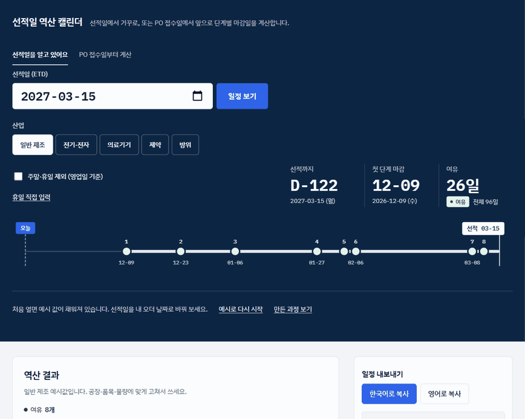
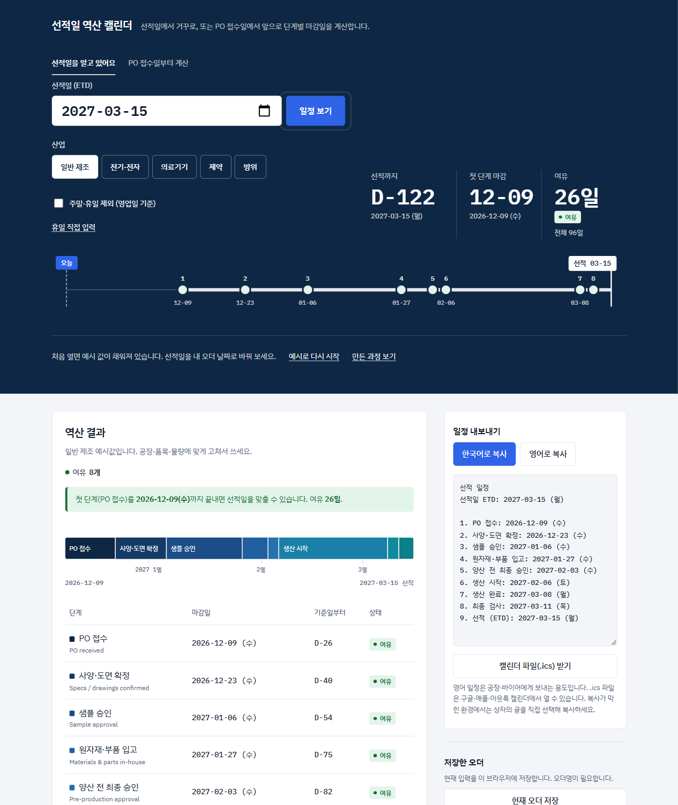
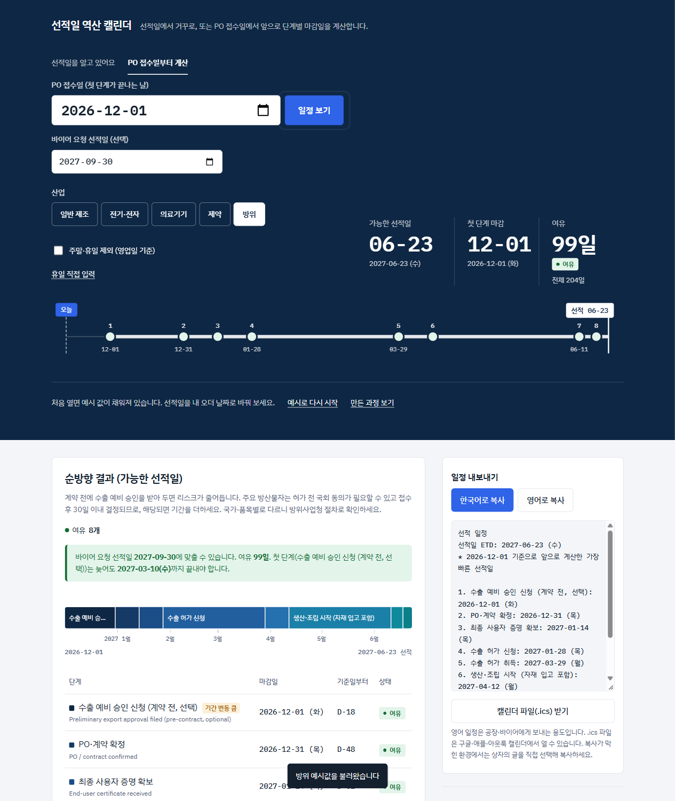
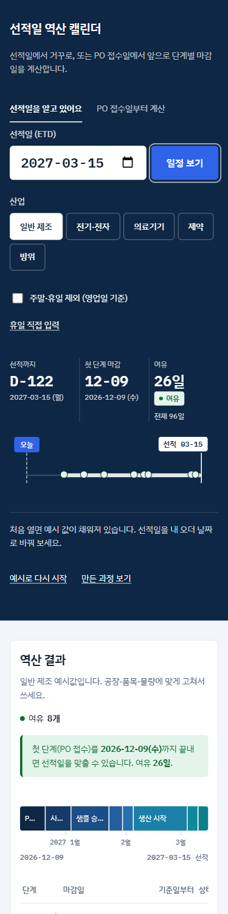

풀려고 한 문제
선적일은 정해졌는데, 마감일은 손으로 셉니다.
해외영업 담당자는 공장·바이어와 일정을 맞춥니다. 선적일(ETD)이 정해지면 거기서 거꾸로 샘플 승인, 자재 입고, 생산, 검사 마감일을 계산해야 하고, 일정이 모자란 것을 뒤늦게 알아차리는 일이 생깁니다.
이 서비스는 선적일 하나를 넣으면 단계별 마감일과 일정 부족 여부를 바로 보여 줍니다. 아래는 일반 제조 예시값의 단계별 기간입니다.
단위: 일. 8단계 합계 96일(예시값). 실제 기간은 공장·품목마다 다릅니다.
누구를 위한 것인가
수출 기업의 해외영업 담당자
특정 업종 전용이 아니라 전기·전자, 의료기기, 제약, 방위 업종에서 쓸 수 있게 만들었습니다. 산업을 고르면 그 업종에서 흔한 단계 구성(예: 인허가, 수출허가)이 예시값으로 채워집니다.
공장·바이어와 일정을 맞추고, 납기를 회신하고, 마감일을 챙기는 사람이 쓰는 도구라고 생각하고 설계했습니다.
내린 결정
무엇을 넣고, 무엇을 뺐는지.
소개 페이지와 도구 화면을 분리
처음 방문한 사람이 무엇을 만들었는지 먼저 볼 수 있게 이 페이지를 첫 화면으로 두고, 도구는 한 번 눌러 들어가는 별도 화면으로 두었습니다. 도구 화면에 들어가면 설명 없이 바로 선적일을 넣을 수 있습니다.
도구 화면의 단 하나의 행동은 "선적일 넣기"
오더명, 바이어, 리드타임 수정은 아래 접이식 영역으로 내려 보조 기능으로 두었습니다.
서비스 이름에서 "T&A" 제거
T&A(Time & Action)는 의류업에서 쓰는 용어로 확인되어, 여러 업종에서 쓸 이름으로 "선적일 역산 캘린더"를 골랐습니다.
순방향 계산 추가
영업 담당자는 "이 날짜에 선적 가능한가?"를 먼저 묻는 경우가 많다고 생각해서, PO 접수일에서 가능한 가장 빠른 선적일과 바이어 요청일과의 차이를 보여 줍니다.
공휴일은 직접 입력
2026·2027년 한국 공휴일을 검색했지만 출처마다 날짜와 개수가 달라 확정하지 못했습니다. 틀린 목록을 넣는 것보다 사용자가 공식 달력에서 확인해 넣게 했습니다.
인허가 단계에 "기간 변동 큼" 표시
인증·인허가·수출허가는 기간이 크게 달라질 수 있어, 전체 여유가 14일 미만이면 주의 문구를 띄웁니다.
서버 없이 브라우저 저장소만 사용
입력한 오더명·바이어명이 외부로 나가지 않습니다. 대신 저장한 오더는 그 브라우저에서만 보입니다.
할 수 있는 것
계산하고, 비교하고, 내보냅니다.
계산
- 선적일에서 거꾸로 단계별 마감일
- 일정 부족 경고, 타임라인 막대
- PO 접수일에서 가능한 가장 빠른 선적일
- 바이어 요청 선적일과 비교
입력
- 산업별 예시 단계 5가지
- 단계 이름(한·영)과 기간 수정
- 주말 제외, 입력한 휴일 제외
- 여러 오더 저장·불러오기·삭제
내보내기
- 한국어·영어 일정 텍스트 복사
- 캘린더 파일(.ics), 엑셀(CSV)
- 공유 링크(입력한 값이 주소에 담김)
실제 화면
한 화면에서 계산하고 비교합니다.




화면 캡처는 특정 날짜 기준이라 직접 열어 보면 오늘 날짜 기준 값으로 보입니다.
솔직한 한계
아직 못 한 것.
- 업종별 단계 이름과 기간은 예시입니다. 일반적인 흐름을 바탕으로 만든 초안이고 실제 규정 문서로 하나씩 대조하지는 못했습니다. 의료기기와 제약은 근거가 특히 부족합니다.
- 실제 사용자에게 써 보게 한 적은 없습니다. 영업 담당자가 어떤 상황에서 쓰는지는 아직 가설입니다.
- 단계는 일렬로만 이어집니다. 인증과 생산처럼 동시에 진행되는 단계는 표현하지 못합니다.
- 공장 휴무와 운송 지연은 자동 반영하지 않습니다.
- 저장한 오더 목록은 이 브라우저에만 남습니다. 한 건의 일정은 공유 링크로 보낼 수 있지만, 링크에는 입력한 오더명·바이어명이 담깁니다.
만든 방식
가볍게, 서버 없이.
순수 HTML 파일로 만들었고 별도 빌드나 서버가 없습니다. 입력값은 브라우저 저장소(localStorage)에만 저장됩니다. 디자인 기준은 색 토큰, 글꼴(IBM Plex Sans KR·Plex Mono), 8px 간격, 버튼 5가지 상태를 문서로 정해 두고 그에 맞췄습니다.
다음에 하고 싶은 것: 영업 담당자 2~3명에게 보여 주고 "언제 쓸 것 같은지" 듣기 · 업종별 단계를 공식 자료로 검수하고 출처를 화면에 표시 · 공식 자료로 검증된 나라별 공휴일 목록 · 동시에 진행되는 단계 표현